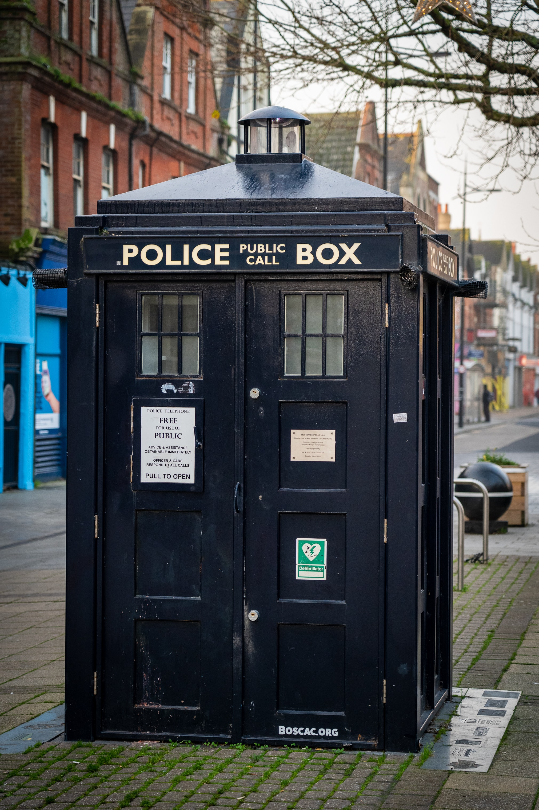

 BBC에서 방영하는 영드 닥터후에 등장하는 닥터의 전용 우주선이자 타임머신. 대부분의 타임로드들은 이런 종류의 이동수단을 가지고 있다. 본래 '타디스'란 타임로드들이 가지고 있는 모든 타디스 전체를 뜻한다. 하지만 이 문서에선 그냥 우리가 알고 있는 닥터의 타디스만 설명하고 있다.트레이드 마크는 역시 나타날 때 서서히 물질화하면서 휘이이잉- 소리가 나는 것.